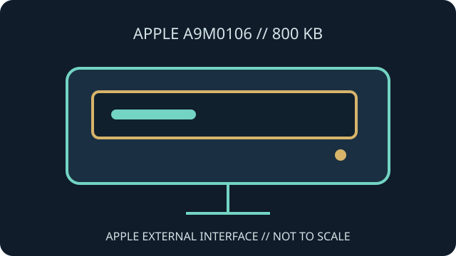

[ INDIVIDUAL COMPONENT // FLOPPY DRIVES ]
Apple 3.5 Drive (A9M0106)
A9M0106 identifies Apple's external 3.5-inch 800 KB disk drive. It is an Apple-system peripheral with a proprietary host connector and Apple-specific disk support, not a generic USB or PC floppy drive.

IDENTIFICATION NOTE: Check the A9M0106 label and connector before use. Apple's external drive families and host support vary; verify a specific Macintosh or Apple II configuration from its own documentation.
Model specifications
| Catalog subcategory | External floppy mechanisms |
|---|---|
| Exact model | Apple 3.5 Drive, part number A9M0106 |
| Media / nominal capacity | 3.5-inch, double-sided 800 KB Apple-format diskettes. |
| Host interface | Apple-specific external floppy connection (19-pin family connector); daisy-chain and host signaling follow Apple's system design. |
| Host compatibility | Supported Apple Macintosh and Apple II configurations depend on the computer, ROM and controller. Use the A9M0106/host manual rather than assuming every 19-pin Apple computer supports it. |
| Media format | Apple 800 KB GCR disk format; it is not interchangeable by default with PC 720 KB/1.44 MB FAT diskettes. |
Model-specific compatibility checks
- Confirm the part number, connector and cable path; do not confuse A9M0106 with UniDisk 3.5 A9M0107 or Apple's 5.25-inch drives.
- Check that the target host and system software support an external 800 KB drive before connecting.
- Use Apple-compatible 800 KB media and imaging software; physical 3.5-inch fit does not imply PC format compatibility.
Preservation and service notes
Record the enclosure label and any internal drive mechanism identification before servicing. A teardown is not a substitute for the correct host-side service procedure.
Preserve original Apple disk images and document whether the source was read through a Macintosh, Apple II interface or dedicated imaging device.
Manufacturer documentation & sources
- Apple Rescue of Denver — Apple 3.5 Drive A9M0106Product identification and compatibility context for the external Apple 3.5-inch drive.
- iFixit — Apple 3.5 Drive teardownVisual teardown documentation useful for identifying enclosure and internal construction.
Use Apple system documentation to confirm host compatibility and service requirements for the exact computer.